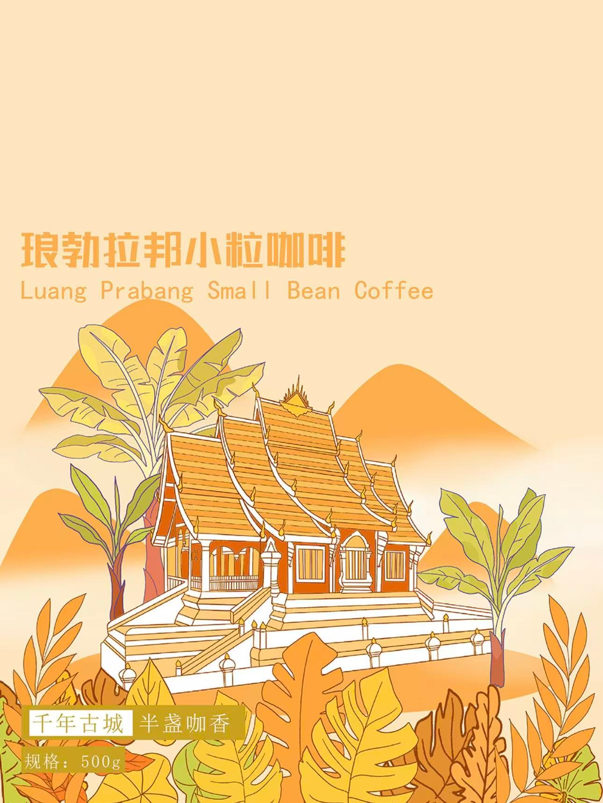
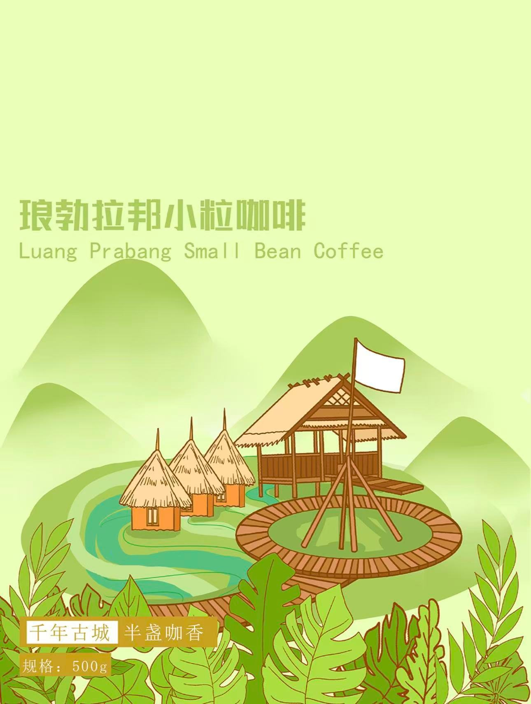
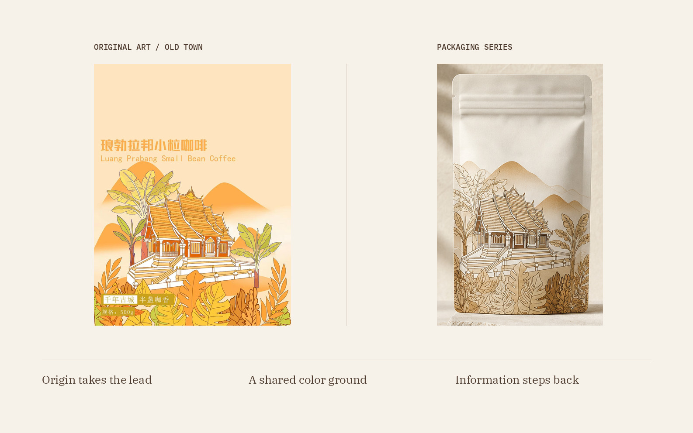
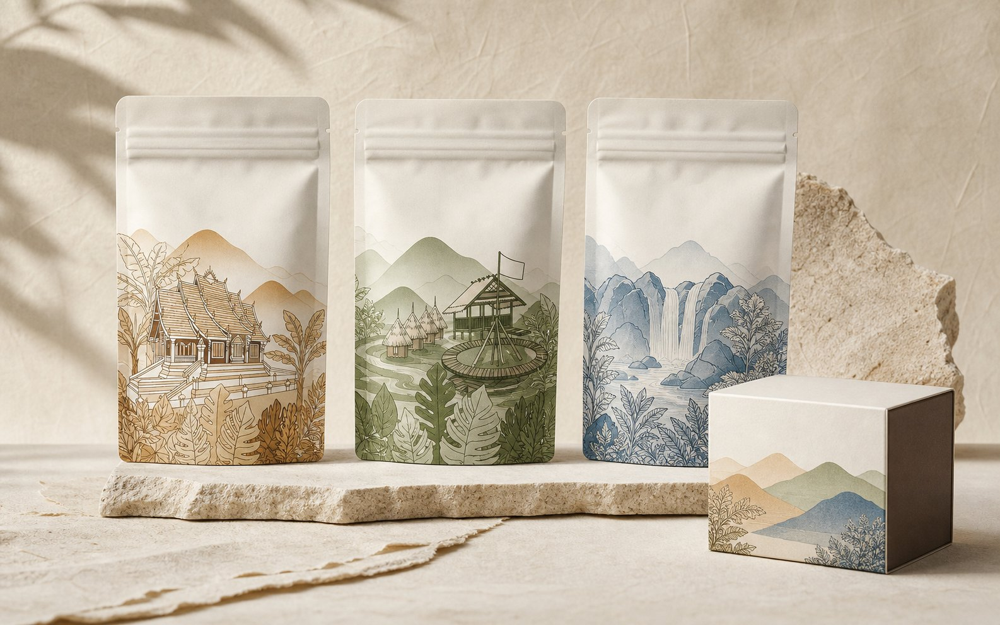
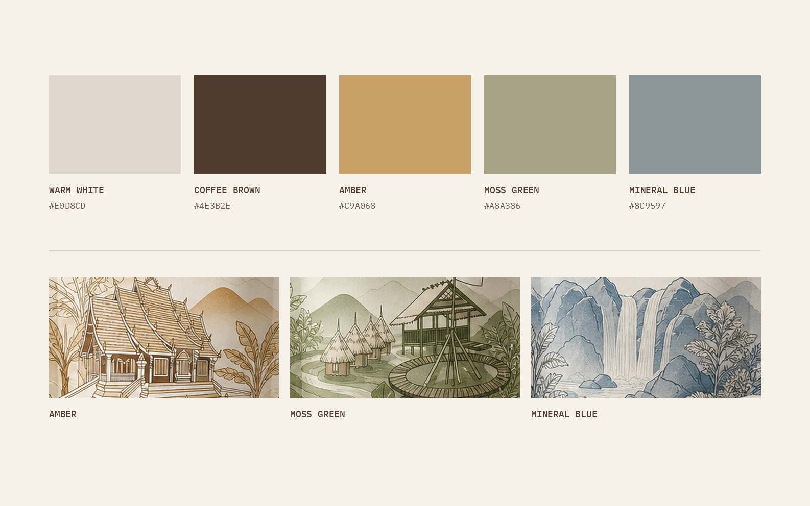
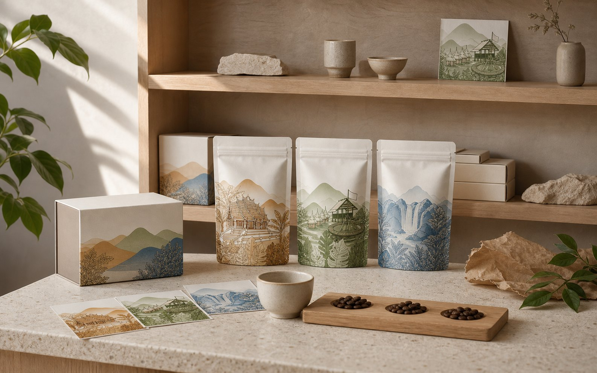

包装 · 早期作品重整
琅勃拉邦
咖啡
三个产地，一种包装语言。
每包咖啡用一幅风景插画，一眼就能看出产地。我们保留原有插画，重新整理了色彩和版式。
起点
插画很好，
但包装看起来更像海报。
这组早期作品有三幅原创插画：老城、湿地和瀑布。插画铺满整个包装当背景，正反面信息也有重复。我们希望三款包装读起来是同一个产品系列。



思路
让产地走到前面
每幅插画从铺满的背景，变成这款产品唯一的「脸」。
共用一个底色
暖白和咖啡棕是底色，琥珀、苔绿和矿物蓝只用来区分产地。
信息退后一步
正反面少重复，留出标签区和呼吸感，让它看起来是产品，而不是海报。

三款包装统一材质与边距。

延伸到零售
明信片、礼盒和杯测工具沿用产地配色。这部分为概念效果图。

成果
故事留下，
系统重整。
三幅原创插画仍是系列的核心。更清楚的配色和版式，让三款包装成为一家人。包装和零售图为概念效果图。
查看全部作品 ↗